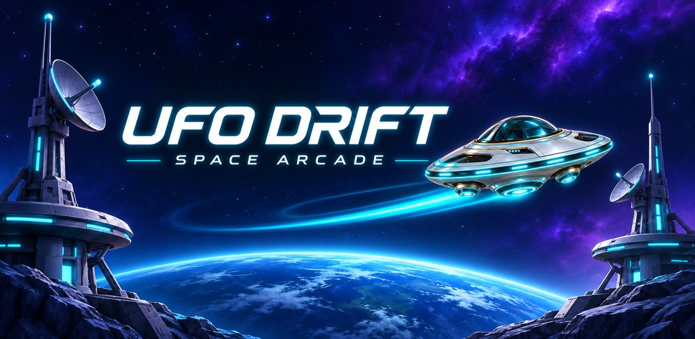
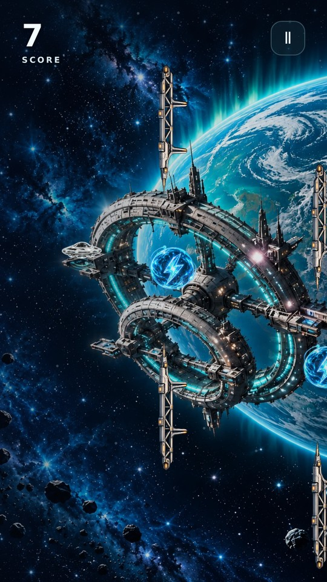
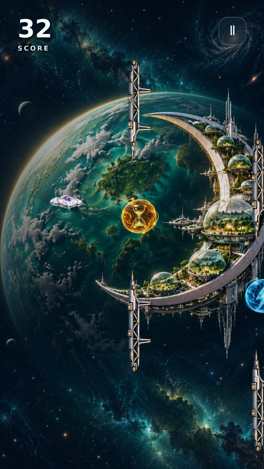
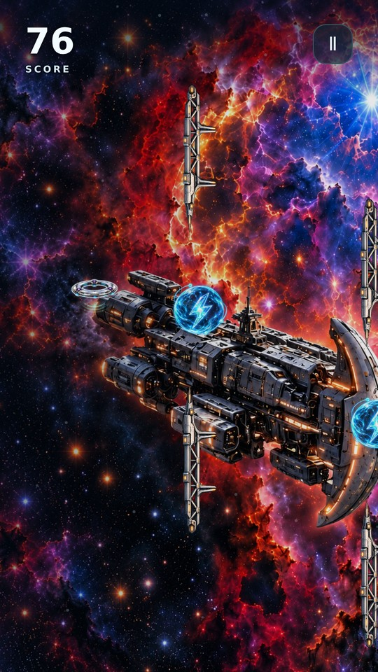

UFO DRIFT: Space ArcadeFind your rhythm.
Android · Currently in testing
Find your rhythm.
Keep drifting.
Android · Currently in testingHold to descend. Release to rise. Guide your saucer between futuristic towers, explore ten cosmic worlds and chase your next rank.
Four ship designs. Optional speed-changing cores. One more chance to beat your personal best.
Contact & supportDesigned for teenagers aged 13+ and adults. Public release is being prepared.
A new horizon every ten points.



In-game renders from test version 0.30 with staged gameplay situations. Final release presentation may change.
For a useful bug report, please include:
- Your phone model and Android version.
- The game version and what happened.
- Steps to reproduce it, if possible.
Progress is saved on your device. Clearing app data removes local progress; there is no cloud restore or game account.